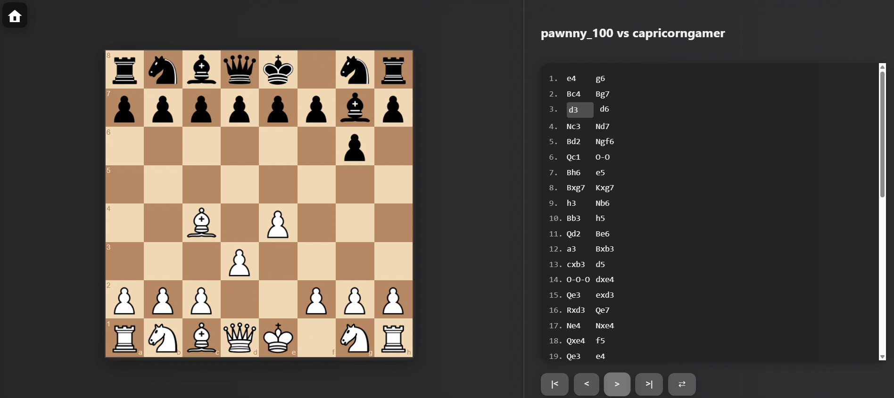
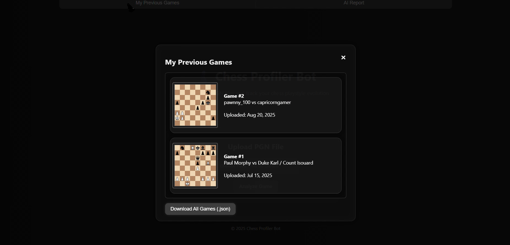
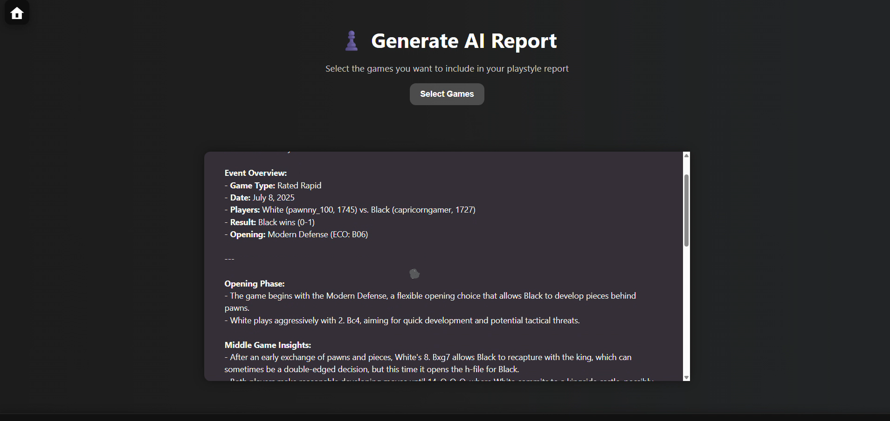

Project C8
An AI-powered chess profiling system designed to help players analyze large collections of games at once, identify recurring patterns, and accelerate training through scalable analysis.
Context
Project C8 addresses inefficiencies in traditional chess analysis. While many tools support single-game review, few enable pattern discovery across large datasets of games.
I collaborated with an IBM researcher to explore how AI models could surface higher-level insights from aggregated chess data.
Problem
Reviewing games one at a time makes it difficult to identify recurring weaknesses such as opening preparation issues, endgame tendencies, or color-based performance gaps.
Solution
I built a system that allows users to upload multiple PGN files at once and applies AI-driven analysis across the entire dataset.
The platform identifies patterns based on move counts, openings, color performance, and recurring positional themes.
Analysis Outputs
  System Demo
Outcome
Project C8 demonstrates how AI can scale analytical workflows that are traditionally manual. Players gain visibility into long-term trends rather than isolated game results.
This project highlights my ability to design scalable systems, collaborate with researchers, and translate complex models into usable tools.
Tools & Skills
- JavaScript and data processing pipelines
- AI / ML pattern recognition
- Hugging Face model integration
- Scalable system design
- Research collaboration